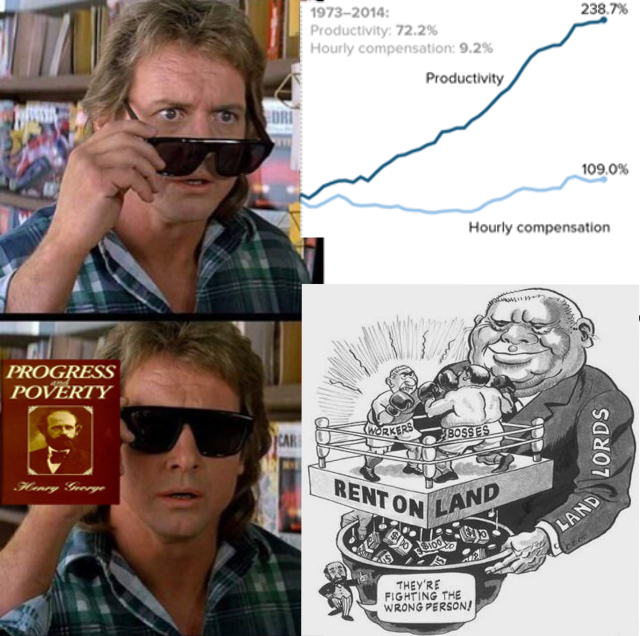

Georgism is the big tent
Everyone wants the same things: life, liberty, the pursuit of happiness, and ownership of the fruits of their labor. Yet, we all argue and fight over the details on how to acheive that.
This is because of not seeing the common issue underlying the strife in capitalist and communist societies, or anywhere in between.
The private ownership of land rents is the common cause of strife.
The law of rent
As productivity rises, landowners can charge higher rent for their land, because now it can be used to create more wealth.
Thus, any productivity gains are captured by landowners, resulting in the workers only keeping a meager portion of the fruits of the labor.
The landowner did not do anything to create this wealth, they simply extorted it from the workers through owning the rental value of the land.
The wealth was created by the community, but the landowner privatizes wealth he did not create.
The rent of land, therefore, considered as the price paid for the use of the land, is naturally a monopoly price.
It is not at all proportioned to what the landlord may have laid out upon the improvement of the land, or to what he can afford to take;
but to what the farmer can afford to give.
- Adam Smith, Wealth of Nations
Under capitialist societies, land is slowly monopolized into the hands of a smaller and smaller group of individuals - resulting in feudalism.
Under communist societies, the party members monopolize the land - resulting in a dictatorship.
In neither case do the people truly own the fruits of their labor.
If everyone had an equal share in the land rents - wealth created by the community - then everyone would own the fruits of their labor.
Government spending
Whenever the government spends the wealth of the taxpayers, it culminates in a wealth transfer from the taxpayer to the land owners.
If the government increases welfare, land rents will rise to meet the government spending.
Now the land values will increase like a ratchet, since land owners will not want to sell for less than they paid.
The government cannot decrease the welfare, because now rents have risen to meet it, so the recipients would be worse off than before the welfare was increased.
The law of rent ensures that the government becomes addicted to welfare spending.
The same principle applies to infrastructure spending. The government will spend taxpayer money to improve the land of the landowners, allowing them to charge a higher rent.
This also has a side effect of making it more expensive for the government to spend in the future:
- The workers building the infrastructure will demand a higher pay, since the rent they pay has increased.
- The land owners will demand a higher sale price for their land, since the land values have increased.
If the landowners are also the bondholders, then the interest that the taxpayer pays on the infrastructure spending also goes to the landowners.
Thus, no amount of government spending or regulation can meaningfully solve poverty in the long term. It is merely a wealth transfer from taxpayers to landowners.
This same principle can be extended to economic recessions:
Businesses are willing to spend, and workers are willing to work, yet the price of land is unaffordable.
Land value tax
In Progess and Poverty, Henry George laid out these principles and stated the solution: a land value tax which funds universal basic income.
A land value tax can be described as a property tax with a universal improvement exemption.
Thus, only the land value is taxed, and not any improvement to the land such as housing.
The ideal tax rate is one in which a free market has people bidding how much they're willing to pay in tax.
Thus, land will be owned by whoever will pay the highest tax on it, then that tax will be distributed back to the people.
In practice, local government tax assessment is a good enough solution for pricing land values.
Even if land has a high sale price, what ultimately matters is how much people are willing to pay to own it.
For example, farmers will only pay a minimal tax, since they can only make a modest amount on the land.
In fact, it's likely that rural landowners will receive more from the dividend than they pay in tax.
This can create generate enormous revenue, while also freeing up unused or underdeveloped land for high density development.
By increasing the housing supply and giving every citizen an equal share of the tax revenue, it can be expected that homelessness, poverty, and starvation will be nearly eliminated.
It will also increase the amount of nature and farmland, because urban sprawl will be significantly reduced.
Government spending is no longer an issue, because every taxpayer is also an equal landowner.
Burdensome taxes can be minimized or eliminated, because of the economic growth caused by putting land to efficient uses.
Workers will automatically gain better working conditions and pay, because companies will have to compete with merely living on the dividend.
In the general case, this tax cannot be passed onto renters, because if the landlord could charge more for rent without causing vacancy, they would.
The only case where it could be passed on is due to the landlord undervaluing their land.
Pricing solutions such as Realpage only provide landlords with better information on their land values, they cannot increase the demand for land.
Existing landowners
Existing landowners will lose their 'investment' in their land, as land prices everywhere will approach 0.
Land will instead be owned by whomever is willing to pay the largest tax on it.
This loss of value is precisely why land value taxes are difficult to implement.
The loss in value doesn't simply disappear, rather it is invested in the community.
So the wealth which otherwise was locked up by the landowner causes expotential growth in the wealth of society.
Even the existing landowners would be better off in this system, yet they (understandably) only focus on the immediate loss of wealth.
Any kind of compensation to the existing landowners is akin to reimbursing slave owners for their loss.
However, that compensation would eventually be distributed back into the community through the land value tax.
Even if a full LVT is not implemented, even a minor adjustment in the right direction will be beneficial.
For example, the bay area's housing crisis could be largely resolved by repealing proposition 13, adding property tax exemptions for improvements, and obliterating zoning laws.
This would generate massive tax revenue and require less spending on homelessness, allowing for California to lower income taxes, further boosting the economy.
In general, arguments against Georgism come from only looking at the drawbacks of the tax in the extreme cases, while ignoring or misunderstanding the enormous benefits of it.
